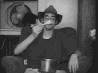

What is a spork
Spork:
Blend of sp(oon sb. + f)ork sb. A proprietary name for a piece of cutlery combining the features of a spoon, fork, (and sometimes, knife).`Spork' is the colloquial term for `Runcible Spoon'.
Patent Information:
1970 Official Gaz. (U.S. Patent Office) 11 Aug. tm 65 Van Brode Milling Co., Inc., Clinton, Mass... Spork for Combination Plastic Spoon, Fork and Knife.
Yet a spork is so much more than just a poor excuse for an eating utensil.
A spork is a perfect metaphor for human existance. It tries to function as both spoon and fork, and because of this dual nature, it fails miserably at both. You cannot have soup with a spork, it is far too shallow; you cannot eat meat with a spork, the prongs are too small.
What are uses for the spork
As we know, a spork is completely innapropriate as an eating utensil, so the question arises: ``But then, what can I use a spork for?''
 This is a 790 Kb AVI of me trying to eat ramen with a spork.
- Pull out all but the edge prongs, rip off the handle, and stick it in your mouth. Instant Dracula!
- Invert the spork (turn it into a foon) and load stuff into the depression and fire!
- Foon your spork and lay it on the table with the arch up, then press on the high arc and release. Flying Foons!
- Foon your spork and then spork your foon in rapid sucession, the resulting crack sound is known as a ` spack'. This is hours of fun.
- Foon your spork and turn the prongs up, you have just created a sporfoontapult, perfect for launchings (see above).
- Alternately bend the prongs inward and outward and stand the spork on end. This is a leaning tower of spork. You can then launch foons over it.
- Get a bunch of friends together and make a plenty foons. Then start launching them at each other, the objective is to collide foons in mid-air. Note: The more foons in the air the better, try to launch 5-10 at a time for a challenge.
- Plant them in your lawn to scare away burglers
- Stick them in your backpack to scare away friends
- Instead of roses, give your girlfriend sporks in new and interesting ways
- Plus much much more...
What other people do with sporks.
- The band ``Soup'' threw out one thousand of them during shows.
- Dark Helmet suggests the ``Spork War''. Much like pencil war, you try and crack one spork with the other. One player holds the spork horizontally, and the other holds it vertically, bends back the handle, lets go, and hits the midsection of the other spork as hard as possible. If you dont break the other spork, you switch off roles. I would recommend using thick sporks with this one.
- Joseph D Mulholland, remembers that way back in the fourth grade he and a bunch of pals played ``lowest spork number'', where you compare the number on the back of the spork and the lowest wins. Sadly, I remember doing this as well.
- John Bragg likes to paint them gold and put them behind his ear, so he can be a ``Spork Pimp''.
There are a couple people out there who insist that one can eat with a spork.
- Neil Haefs says one can eat Ramen with the broth drained off and the infamous Nacho Supreme.
- Gregory S. Sutter holds that they are good for Chinese food.
- Lydia Mills says they are good for potato salad.
- Barbera Keller, says her infant daughter eats as well with a spork as with anything else.
- Barbara Burnett has apparently been resonably sucessful in eating KFC mashed potatoes with gravy.
- Some guy who calls himself Rust uses sporks to eat all of his taco droppings at Taco Bell.
Sporks from around the world
I have been collecting information about what types of sporks there are and where to get them.
- Taco Bell, while their sporks only have three prongs and are unsuitable for fooning, they are nice and sturdy.
- Kentucky Fried Chicken, in some parts of the country, still gives out sporks. If I remember properly, They are quite tiny and flimsy, with four prongs.
- Wendy's in upstate New York gives out sporks, and according to Peter Blackbird, they are very easy to foon.
- New York Public School's sporks are green and have four prongs. They are among the best I have ever used.
- New Jersey Public School's sporks are white, four pronged, and quite thin, perfect for fooning, yet do not jump as high as as New York sporks.
- In Central High School in Kansas City, Missouri, the sporks have three prongs and are quite tough to foon (but it can be done, Joe Leone holds the record, with 4 seconds).
- In New Zealand, according to Lydia Mills, Sporks are made by a company named ``Lily''.
- Daren A. Sommers says that there is a giant spork about 25 feet tall at Kansas State University, which is called ``The Penis on the Prairie". It's normally located in front of the Chem/Biochem building.
- According to Barbara Keller, you can get silver sporks from a company called Dansk.
- In the Pima County Adult Detention Center (located in lovely Tuscon Arizona), sporks are issued with each meal.
Sporks which aren't sporks

- In Canada you can get a spam-like food called ``Spork''.
- There's a guy named Maz Henrik Spork.
- The band, `Spork', may be seen in Marana, Arizona (I hope their guitars have prongs)
- The band, `Spoon Fed', uses sporks as their mascot, logo, and destiny.
- There's yet another band called `Spork' in Albuquerque, NM. The singer Jeremy Clymer also has a strange fixation with stroons
- Donald Biggs is also in a band called `Spork' located in Colorado.
Sporks in the media
- President Clinton used a spork as ``The symbol for this administration'', because of it's dual nature. What he neglected to mention was that it is impossible to eat with.
- The Critic used a spork as a threat: ``You want a piece of me fat boy? I'll spork your ass!''
- The Critic also used a spork as an excuse for something less amusing he said to his girlfriend.
- In The Simpsons, Bart recieved a pocket knife which contained a spork when he joined the Boy Scouts.
What's all this I'm hearing about `Foons?'
A foon is the inverse of the spork, and is created through a process known as fooning. The process can only be done on flexible sporks (Taco Bell sporks are right out, they crack as soon as you apply any kind of pressure) and it takes a skilled hand. Beware! You are apt to crack many sporks before you become a true master of the foon.
This is a 1.3 meg AVI of my good friend Terry making a foon and spacking it (that cracking sound).The process of fooning is as follows:
- Place your thumb on the bottom curve of the spork
- Gently push in with the thumb until the spork is inverted
- If done properly, you may let go and the spork will retain it's foon shape
Once you have your foon a whole new world of enjoyment between you and your spork/foon will open up for you.